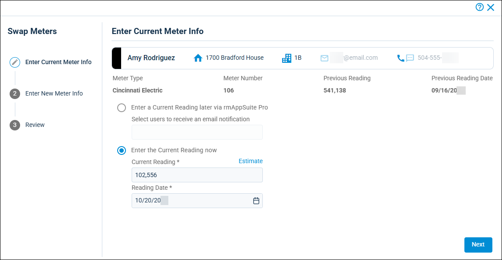
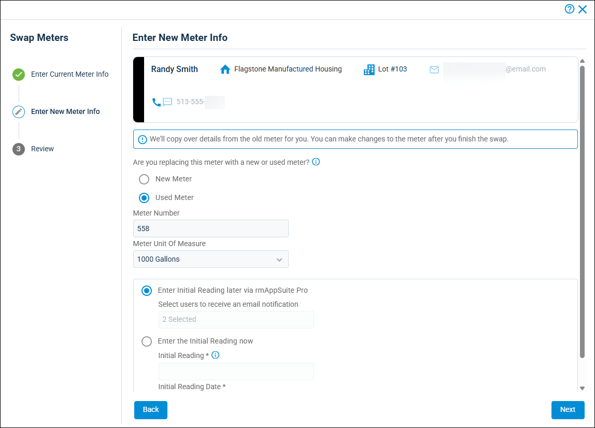

Source: https://rmxhelp.rentmanager.com/Topics/Express/Other/MU-Swap-Meters.htm
Swap Meters
Whenever you need to swap out the physical utility meters at a property—whether it be to replace faulty equipment, upgrade to smart meters, or any other reason—you can use the Swap Meters tool to efficiently record this process in Rent Manager. This tool allows you to seamlessly combine the old meter's last reading and the new meter's reading into one posted charge, even if you need to swap the meters in the middle of a billing period. This helps reduce confusion from tenants and prevents the updating of the meters from slipping through the cracks.
Related Privileges
| Group | Privilege | Column |
|---|---|---|
| Utilities | Metered utilities | Enabled |
For more information, refer to Control User Access.
Step 1: Initiate the Meter Swap
To start the process to swap a meter, do the following:
-
Navigate to one of the following pages:
Page Navigation Meter Readings
Go to
 arrow_forward Services arrow_forward Metered Utilities arrow_forward Meter Readings.
arrow_forward Services arrow_forward Metered Utilities arrow_forward Meter Readings.Meter Readings Setup
Go to
arrow_forward Services arrow_forward Metered Utilities arrow_forward Meter Readings Setup.The Meter Readings or Meter Readings Setup page displays.
-
Select the following filters to populate the list of meters:
Field Description Property
The property of the unit that has a meter in need of replacing.
Utility
The type of utility meter that needs replacing.
The list of units and meters of the selected utility at the property displays.
-
For the meter you wish to swap, click
 arrow_forward Swap Meter.
arrow_forward Swap Meter.More Information
If you are on the Meter Readings page and the meter you wish to swap does not display in the list, uncheck the Show consumption exceptions only and Show units with no readings only options at the top.
The Swap Meters wizard displays.
Step 2: Enter Current Meter Information

The top of the pop-up displays information about the meter's unit, such as the tenant and their contact information. Additionally, information regarding the meter itself and its previous reading displays below, such as the meter number and the date that reading was taken.
Select one of the options below and enter the needed information, then click Next.
| Option | Description |
|---|---|
|
Enter a Current Reading later via rmAppSuite Pro |
If you are swapping the meter now but not currently at the meter and wish to record that information later, select this option. This allows technicians to add the reading later via rmAppSuite Pro's Off-Cycle Reads tool. In the drop-down field below, select which user(s) receive an email notification alerting them that this meter reading is now available as an off-cycle reading in rmAppSuite Pro so they can add the reading information. |
|
Enter the Current Reading now |
If you are recording the old meter's current reading at this time, select this option. Then enter the reading and the date that reading was taken in the associated fields. If the meter cannot be accessed by the technician, click Estimate to have Rent Manager calculate an estimated meter reading based on the selected configuration. For more information, refer to Estimate a Metered Utility Reading. More Information The Estimate option displays only if the Enable Meter Estimates option is checked in your Meter Estimates system defaults. For more information, refer to Meter Estimates (Page). |
Step 3: Enter New Meter Information

To record the information for the meter replacing the previous meter, do the following:
-
Select one of the following options:
Option Description New Meter
The meter you are installing as a replacement is brand new and has never been used.
Used Meter
The meter you are installing as a replacement has been used previously for another unit, location, or purpose.
-
Enter information into the following fields:
Field Description Meter Number
The unique number for the replacement meter. This may be a serial number or other identification number.
Meter Unit of Measure
The unit of measurement (e.g., Gallons, Cubic Feet (CF)) used on the meter for tracking utility usage. This field does not display if the utility does not use a unit of measure.
-
If you selected Used Meter, select one of the options below:
Option Description Enter Initial Reading later via rmAppSuite Pro
If you are swapping the meter now but not currently at the meter and wish to record that information later, select this option. This allows technicians to add the replacement meter's initial reading later via rmAppSuite Pro's Off-Cycle Reads tool.
In the drop-down field below, select which user(s) should receive an email notification alerting them that this meter reading is now available as an off-cycle reading in rmAppSuite Pro so they can add the initial reading information.
Enter the Initial Reading now
Enter the reading that currently shows on the replacement meter. This reading is used as the starting point for tracking usage, preventing the tenant from being charged for old readings on a used meter that was just installed. Then enter the date on which the initial reading was recorded.
-
Click Next.
Step 4: Review and Confirm Meter Swap
On the final page of the Swap Meters wizard, a summary of all information entered for the meter replacement displays and allows you to create a service issue for performing the physical meter swap. To finalize the meter swap, do the following;
-
Carefully review this information to ensure all the details and readings have been added correctly.
-
In the Do you want to create a service issue for this meter swap? field, select one of the following options:
Option Description Not right now
Proceed with the meter swap in Rent Manager without creating a service issue. An issue can be created later for the physical meter replacement in the real world.
Yes
Proceed with the meter swap and automatically create a service issue for the physical meter replacement in the real world after completing the Swap Meters wizard.
Related Privileges
This field displays only if the user has the following privilege:
Group Privilege Column Service Manager Issues Add For more information, refer to Control User Access.
-
Click Swap Meter.
The meter is swapped and both readings from the previous meter and the replacement meter will be combined into one charge when posting utility charges for the tenant.More Information
If you selected Yes for creating a service issue for the meter swap, the New Issue wizard to create the service issue displays. Fill out the needed information to perform the meter swap in the real world and click Save. For more information, refer to Add an Issue.
Next Steps
After performing the meter swap, you can perform the actions described below.
| Action | Description |
|---|---|
|
Record Off-Cycle Readings in rmAppSuite Pro |
If during the meter swap process you selected the option to have a technician record a current or initial reading later, your techs can go use the rmAppSuite Pro app to access the Off-Cycle Readings tool and record the reading information. This information will then be synced to Rent Manager and the meter information is fully updated. |
|
Update additional meter information |
During the conversion process, additional information about the meter is automatically transferred from the previous meter to the replacement meter, such as the class code, route, and so on. If you need to update this information for the replacement meter, you can do so on the Meter Readings Setup page after the swap is completed. For more information, refer to Meter Readings Setup (Page). |